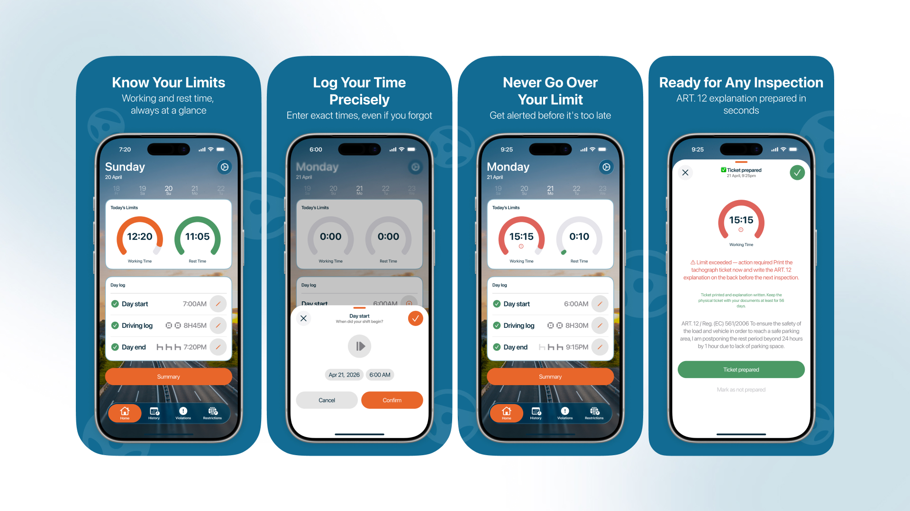

TachoBook — Shift Logging & Rest-Time App for EU Drivers
An offline-first mobile UX/UI case study exploring manual shift logging and break tracking for commercial truck drivers navigating complex EU driving-time regulations.
Strict EU tachograph driving-time rules carry heavy fines for mistakes. Commercial drivers need an immediate, error-proof tool usable during short cabin breaks.
UX/UI Designer — Information architecture, user flows, low-to-high-fidelity wireframes, iOS design system tokens, and interactive Figma prototyping.
Engineered high-contrast touch targets and glanceable color-coded status rings to guarantee legibility and error prevention under direct sun or night cabin light.
Informed by firsthand commercial trucking experience in Europe, grounding ergonomics and interaction speed in authentic driver workflows.
